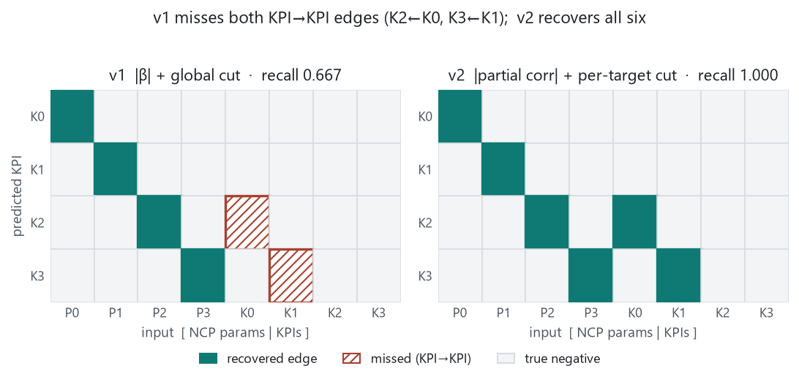
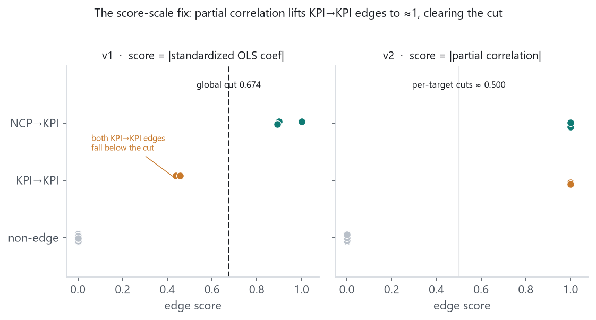
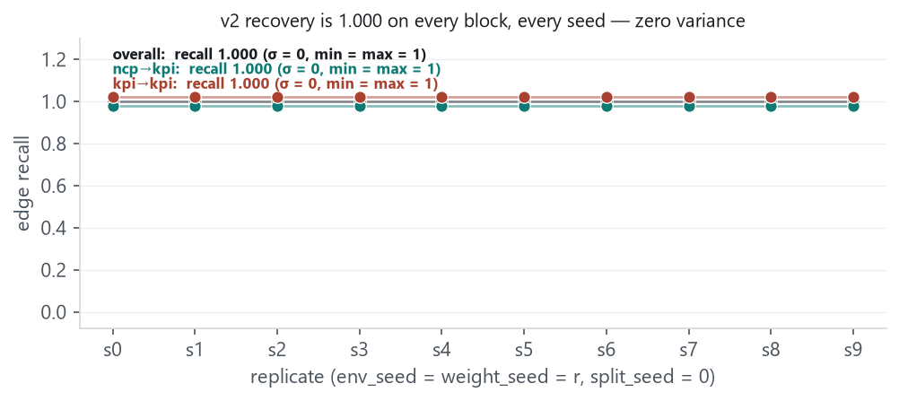

largest_gap cut)
recovered the four NCP→KPI edges but missed both KPI→KPI edges (overall recall
0.667), leaving the E1 recovery gate unmet. This report replaces the
score and threshold with a per-target partial-correlation rule and reports the
as-run result. The v1 report’s numbers stand unchanged; it is superseded only for the gate.
E1 remains the linear, noiseless recovery control.
On the E1 one-step prediction pipeline we replace the label-free discovery score and
threshold. The v2 edge score is the magnitude of the partial correlation of each
candidate input with each target KPI, controlling for all other candidate inputs; the threshold is a
per-target largest_gap applied within each target’s own score row (floor
0.0), never pooled. Partial correlation normalizes by residual
variance rather than total output variance, removing the multi-parent sd(y)
deflation that pushed v1’s two KPI→KPI scores (≈0.44) below its
single global cut (0.674). The protocol was frozen before execution
(protocol_commit c66b81d); two defects were caught and re-frozen
before any run (a residual-STOP that would have fired on every non-parent, and a positive-floor
that would have dropped a co-parent by one ULP). As run, v2 lifts every true parent to
|ρ| ≈ 1 and drives every non-parent to exactly
0, so each per-target cut lands near 0.5 and
recovery is complete on 003 and on all ten seeds (standard deviation 0 on
every recovery block). Because v2 recovers the exact true graph, the discovered mask equals the
oracle (true-adjacency) mask bit-for-bit; under the protocol’s registered-parameter design
the discovered and oracle arms are then the same model, so their held-out MSE is equal by
construction — closing, without retraining, the ~4-orders-of-magnitude prediction penalty the
v1 discovered arm paid for its missing KPI→KPI edges. The near-perfect separation is a property of
the noiseless linear control, not a hard-won result; discovery under noise and nonlinearity is the E2+
question.
E1 is the locked, linear, noiseless recovery control: the next-step KPIs are an exact linear function of the current state, K0′=P0, K1′=P1, K2′=P2+0.5·K0, K3′=P3+0.5·K1. Its role in the benchmark is to confirm that the label-free pipeline recovers structure when it is recoverable; until it does, the locked contract holds downstream decision results uninterpretable.
The v1 rule scored each candidate edge by the absolute standardized OLS coefficient |β| and cut the pooled score vector once. Standardization scales each edge by sd(xi)/sd(yj); a multi-parent target’s sd(yj) is inflated by every parent, so all of its incoming edge scores are deflated together. A single pooled cut then straddles targets that live on different score scales, and the two weak-but-real KPI→KPI edges fall in the band gap below it. v2 changes only the score and the threshold:
Residualizing both the input and the target on the other inputs normalizes by residual variance, which removes the sd(y) inflation. In a noiseless linear SCM a true direct parent then reaches |ρ| ≈ 1 and every non-parent exactly 0 (the other inputs already explain the target, so the input adds no unique signal — the standard 0/0 resolution, defined as an absent edge). Pinning the per-target floor to 0.0 keeps the 0→signal separating gap eligible, so each row’s cut lands near 0.5 rather than inside the ≈1 cluster.


| block | precision | recall | F1 | tp | fp | fn | v1 recall |
|---|---|---|---|---|---|---|---|
| overall | 1.000 | 1.000 | 1.000 | 6 | 0 | 0 | 0.667 |
| NCP→KPI | 1.000 | 1.000 | 1.000 | 4 | 0 | 0 | 1.000 |
| KPI→KPI | 1.000 | 1.000 | 1.000 | 2 | 0 | 0 | 0.000 |
The envelope (env_seed = weight_seed = r, split_seed = 0,
r = 0..9; 48 episodes × 16 steps, noise 0) was
regenerated through a committed, tested driver
(scripts/e1_slice_recovery_v2_sweep.py) — not an ad-hoc harness — and digested at
docs/benchmark/plan006_recovery_digest/. Every replicate’s
dataset_hash matches the earlier run; aggregation is byte-identical on re-run.

Because v2 recovers the exact true graph on every seed, the discovered (K, P+K)
mask is bit-for-bit identical to the oracle (true-adjacency) mask — verified explicitly on
003 and all ten seeds, and guarded by a test
(test_discovered_mask_equals_oracle_true_mask_on_real_e1). Under the protocol’s
registered-parameter design the discovered arm shares the oracle arm’s exact per-output MLP, rows,
train IDs, config, and weight seed; the only thing that ever differed was the mask, and now it does not.
Training is deterministic (the 2026-09-03 envelope recorded zero variance). Two arms with identical
architecture, data, configuration, weight seed, and mask are the same model, so their held-out one-step
MSE is equal by construction. We therefore do not retrain the three-arm envelope, and we
report no v2 MSE numbers — the parity below is a construction result, not a measurement.
| arm | v1 test MSE | v2 (by construction) |
|---|---|---|
| oracle | 4.253e-07 | — |
| dense | 1.433e-06 | — |
| discovered | 1.036e-02 | = oracle |
In v1 the discovered arm was roughly four orders of magnitude worse than oracle because it missed the two KPI→KPI parents: its K2/K3 heads could not see K0/K1, so they could not represent K2 = P2 + 0.5·K0 or K3 = P3 + 0.5·K1. In v2 that cause is gone, so the penalty is gone: MSE(discovered) = MSE(oracle).
Stated plainly: the near-perfect separation is a property of the noiseless linear control read with the right conditioning, not a hard-won empirical result. Green E1 means the label-free pipeline recovers structure when it is recoverable — exactly E1’s intended role, and what unblocks interpreting E2+. No noise was added to E1 to manufacture difficulty.
Reproducibility. Frozen protocol docs/benchmark/E1_DISCOVERY_PROTOCOL_V2.md
(protocol_commit c66b81d); as-run result docs/benchmark/E1_DISCOVERY_RESULT_V2.md;
committed envelope digest docs/benchmark/plan006_recovery_digest/. 003 run hashes:
dataset cfce4c10…, split ec6658d0…,
discovery_v2 6c2e0adf…, recovery_v2 508bc795….
Figures. uv run python reports/2026-09-04-e1-v2-partial-correlation-recovery/make_figs.py,
reading the committed v1 discovery artifact, the committed v2 envelope digest, and the local (gitignored,
regenerable) 003 discovery_v2.json. This report lives under the gitignored reports/
tree. numpy 2.4.2 · torch 2.10.0 · python 3.12.13.